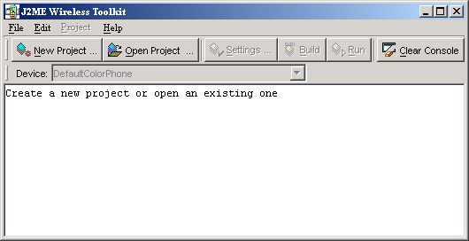

|
|
This book describes how to use the J2ME Wireless Toolkit.
The J2ME Wireless Toolkit is a set of tools that makes it possible to create applications for mobile phones and other wireless devices. Although it is based on the Mobile Information Device Profile (MIDP) 2.0, the J2ME Wireless Toolkit also supports a handful of optional packages, making it a widely capable development toolkit.
If you’d like to get started right away, try the demonstration applications that are included with the J2ME Wireless Toolkit.
To run the demonstrations, start KToolbar. On Windows you’ll do this by choosing Start > Programs > J2ME Wireless Toolkit 2.2 > KToolbar.1 You’ll see a window like this:

Next, click on the Open Project... button to open a demonstration application. You'll see a list of all the available applications. Pick one of them and click on the Open Project button in the dialog.
Once the application is open, all you need to do is press the Run button. The emulator will pop up running the example application.
Most demonstrations are self-explanatory, but some have additional instructions. See Appendix A, “Application Demonstrations,” for additional details.
All the source code for the demonstration applications is available in the {toolkit}\apps directory. Each demonstration has its own project directory. Inside the project directory, the source files are in the src directory. For example, the source code for the games demonstration is in {toolkit}\apps\games\src directory.
The J2ME Wireless Toolkit has three main components:
KToolbar is the center of the toolkit. You can use it to build applications, launch the emulator, and start the utilities. Alternately, the emulator and utilities can be run by themselves, which is useful in many situations. If you want to demonstrate MIDP applications, for example, it’s useful to run the emulator by itself.
The only additional tool you need is a text editor for editing source code.
The J2ME Wireless Toolkit supports the creation of MIDP applications with the following main features:
The J2ME Wireless Toolkit supports many standard Application Programming Interfaces (APIs) defined through the Java Community Process (JCP). TABLE 1 shows the APIs and includes links to the specifications.
|
|
J2ME Wireless Toolkit User's Guide J2ME Wireless Toolkit 2.2 |
Copyright © 2004 Sun Microsystems, Inc. All rights reserved. Use is subject to the license terms.